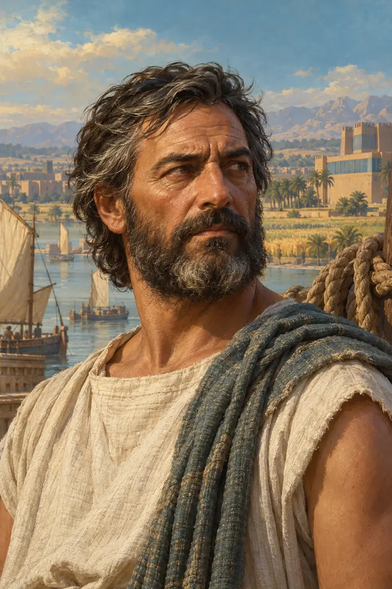
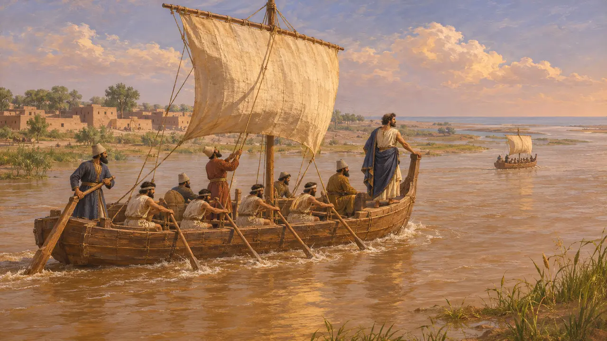
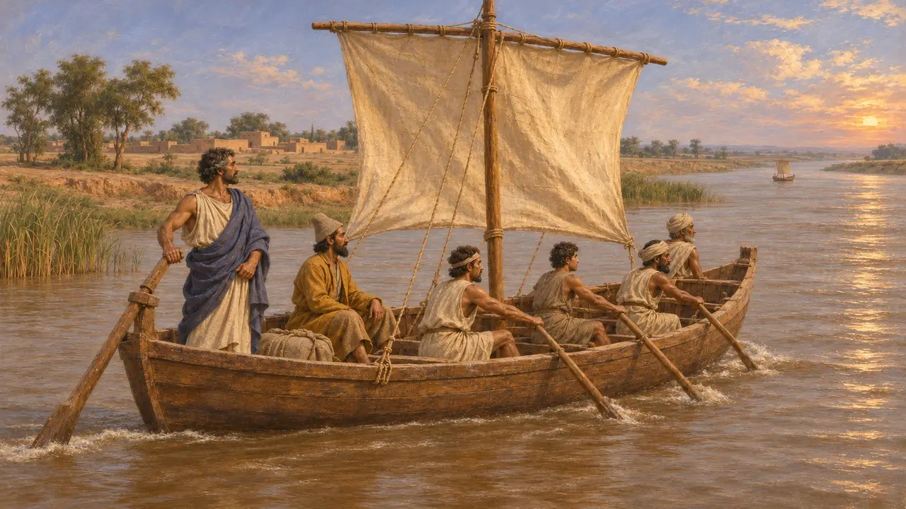
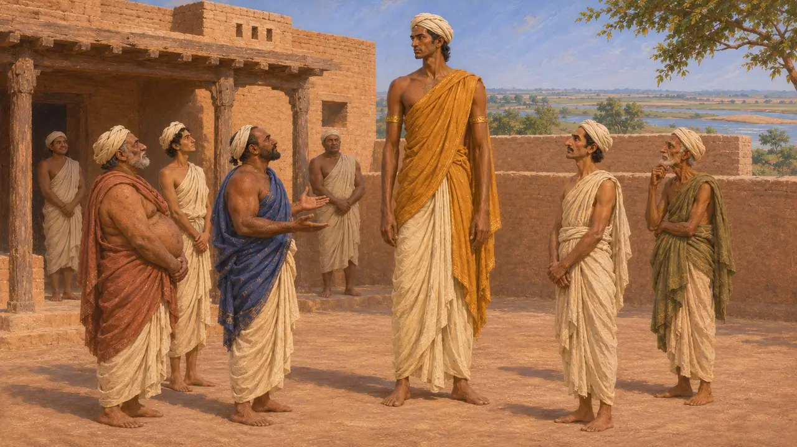

스킬락스는 소아시아 남서부의 작은 해안 도시 카리안다 출신의 카리아인이었다. 헤로도토스에 따르면 다리우스는 그를 보내 인더스강을 따라 바다까지 내려간 뒤 서쪽으로 이집트까지 항해하게 했고, 대왕은 그 항해 뒤에 인도인을 정복했다. 그는 그리스 문헌에 이름이 남은 최초의 탐험가 가운데 하나이며, 그의 항해가 전해지는 대로 이루어졌다면 제국의 동쪽 끝과 서쪽 끝을 바닷길로 이은 셈이다.
게임에서: 게임은 헤로도토스 4.44를 따른 연대기 주석에서만 스킬락스를 언급합니다. 그를 그리스 탐험가라 부르지만, 실제로는 카리안다 출신의 카리아인으로 아마 그리스어로 글을 썼을 것이며, 항해의 연대와 항로는 불확실합니다.

헤로도토스가 전하는 항해
고대의 전승헤로도토스에 따르면, 다리우스는 인더스강이 바다와 만나는 곳을 알고 싶어 신임하는 자들을 태운 배들을 보냈는데, 그중에 스킬락스가 있었다. 그들은 팍티이케 지방의 카스파티로스를 출발해 강을 따라 바다까지 내려간 뒤 서쪽으로 항해하여 30개월째에 홍해 안쪽 끝에 이르렀다. 헤로도토스는 그 뒤 다리우스가 인도인들을 정복하고 이 바다를 이용했다고 덧붙인다.
Herodotus 4.44

항해에 관한 의문
분쟁 중역사가들은 그 시기를 두고 논쟁하는데, 대개 기원전 519년경에서 기원전 510년 사이로 보며, 힌두시 정복이 그 이전인지 이후인지도 의견이 갈린다. 헤로도토스는 배들이 인더스강을 따라 동쪽으로 내려갔다고 하지만, 이 강은 남서쪽으로 흐르므로 지리 인식이 뒤섞였음을 짐작게 한다. 아라비아를 도는 항해 전체를 의심하는 이들도 있고, 나일강에서 홍해에 이르는 다리우스의 운하가 이 바닷길에 대한 관심과 맞아떨어진다고 지적하는 이들도 있다.
P. Briant, From Cyrus to Alexander, 2002

저술가 스킬락스
분쟁 중후대 그리스 저술가들은 스킬락스를 인도에 관해 쓴 저술가로 여겼다. 아리스토텔레스는 인도의 왕들이 신민보다 훨씬 높은 위치에 있다는 주장의 출처로 그를 인용한다. 지중해 해안을 묘사한 현존 문헌에 그의 이름이 붙어 있으나, 학자들은 이를 그보다 훨씬 뒤인 4세기의 것으로 보아 오늘날에는 위(僞)스킬락스라 부른다. 후대 저술가들이 그의 보고서를 실제로 얼마나 읽었는지는 알 수 없다.
Aristotle, Politics 7.14; G. Shipley, Pseudo-Skylax's Periplous, 2011
낙소스의 스킬락스와는 다른 인물
고대의 전승헤로도토스는 또 다른 스킬락스도 전하는데, 카리아의 민도스 출신 선장으로, 기원전 499년경 낙소스 공격이 실패했을 때 페르시아 지휘관 메가바테스에게 벌을 받은 인물이다. 두 사람은 별개의 인물이지만, 둘 다 카리아인이 바다에서 대왕을 섬겼음을 보여 준다.
Herodotus 5.33
출처
- Herodotus 4.44
- DB §6; DNa
- P. Briant, From Cyrus to Alexander, 2002
- K. Karttunen, India in Early Greek Literature, 1989
- G. Shipley, Pseudo-Skylax's Periplous, 2011
- Aristotle, Politics 7.14; Persepolis Fortification tablets